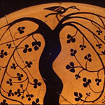
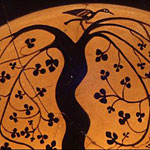
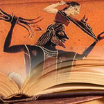
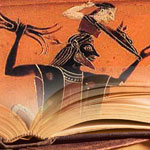

Fixed Top Menu
Although people of all countries, eras, and stages of civilization have developed myths that explain the existence and workings of natural phenomena, recount the deeds of gods or heroes, or seek to justify social or political institutions, the myths of the Greeks have remained unrivaled in the Western world as sources of imaginative and appealing ideas. Although people of all countries, eras, and stages of civilization have developed myths that explain the existence and workings of natural phenomena, recount the deeds of gods or heroes, or seek to justify social or political institutions, the myths of the Greeks have remained unrivaled in the Western world as sources of imaginative and appealing ideas. Poets and artists from ancient times to the present have derived inspiration from Greek mythology and have discovered contemporary significance and relevance in classical mythological themes.


 


 
